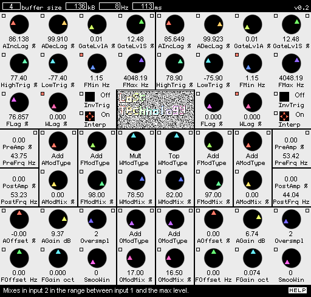
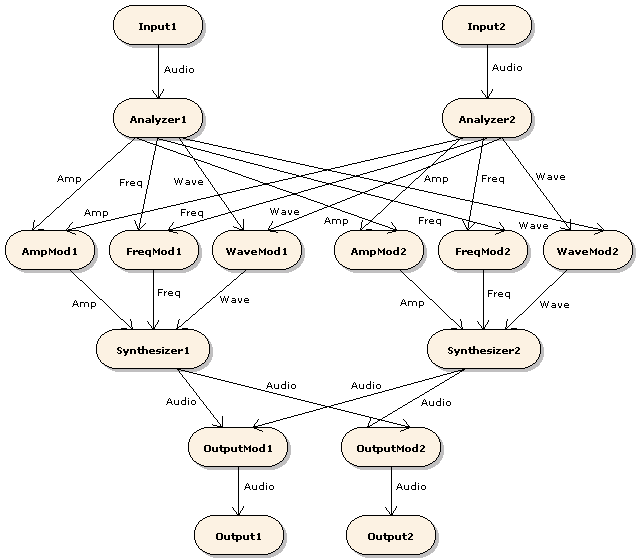
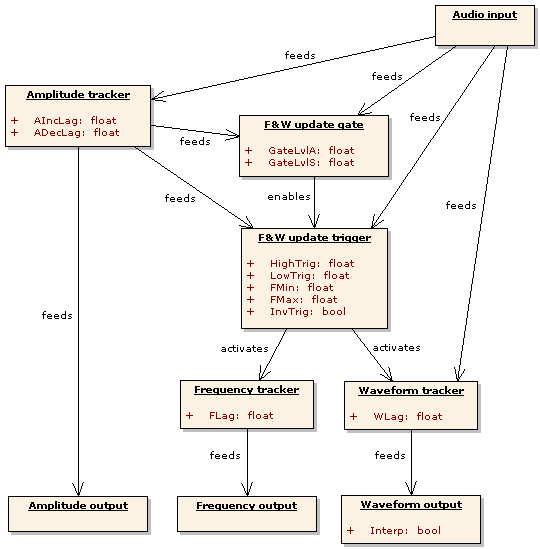
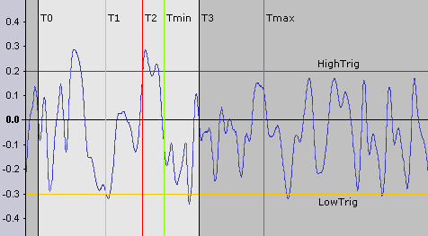
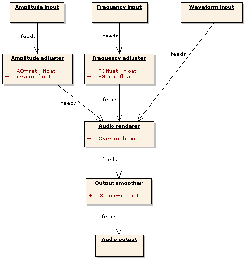

Introduction

Figure 1: A screenshot of Lost Technology. Analyzers are on top, Modulators in the center and Synthesizers in the lower corners.
Lost Technology transforms sounds by taking them apart and then putting them together in a different way. The Analyzer components split the input signals into amplitude, frequency and waveform (harmonic content) sub-signals. The Modulator components combine sub-signals (and audio signals) in various ways. The Synthesizer components merge one sub-signal of each type into a new audio signal.

Figure 2: Internal signal paths. Rounded shapes represent components, arrows represent signals. "Mod" is an abbreviation of "Modulator". Labels next to the arrows show signal type.
Basic terminology
A signal is a function whose domain is a (possibly infinite) time interval. The length of a signal is the length of its domain interval.
A slice is a signal with known, finite length. Lost Technology divides its input signals into thin slices and then constructs output signals out of those slices.
An audio signal is a real-valued signal that represents a sound. Audio signals that contain values greater than 1 or less than -1 are overloading and may not be processed normally.
An amplitude signal is a nonnegative-valued signal that represents the loudness of a sound. The value 0 (0%) represents silence, the value 1 (100%) represents maximum volume. Amplitude signals that contain values greater than 1 are overloading and may not be processed normally.
A frequency signal is a nonnegative-valued signal that represents the pitch of a sound. The value 0 (0%) represents 1Hz, the value 1 (100%) represents the maximum frequency of Lost Technology (22kHz). Frequency signals that contain values greater than 1 are overloading and may not be processed normally.
A waveform signal is a signal whose values are audio slices; it represents the overtones of a sound. Waveform signals whose values contain values greater than 1 or less than -1 are overloading and may not be processed normally.
Strictly speaking, a cycle is just a slice of an audio signal. However, the term is used to denote audio slices that Lost Technology has chosen and manipulated to make useful "building blocks" for sound generation. The concept of the cycle in Lost Technology is similar to the concept of the grain in granular synthesis. (In fact, the stuff Lost Technology does could be described as "granular analysis and synthesis".)
The current value of a signal is the value the signal function has at the current point in time. That is, current_value(signal) = signal(current_time).
Slice operations
This manual often shows signal slices being used as operands in addition, multiplication and other mathematical operations. To understand the meaning of these expressions, it is useful to think of a slice as a list of numbers. Applying an operation to two slices is equivalent to applying the operation to each pair of numbers that are in the same positions in the two lists and making one new list out of the results. For example, if sliceA = (3, 4, 2) and sliceB = (5, 1, -3), then sliceA+sliceB = (3, 4, 2)+(5, 1, -3) = (3+5, 4+1, 2-3) = (8, 5, -1).
The Analyzer
The Analyzer produces an amplitude output signal by measuring the average signal level of its audio input signal. The Analyzer also produces a frequency output and a waveform output. Those two outputs are created through a process that chops the audio input into slices in accordance with certain rules, as will be explained in the following subsections. The frequency output is formed by measuring the length of each chopped-off audio slice and converting it into a frequency signal value. The values of the waveform output signal are the chopped-off slices themselves.
Terminology
The following list contains definitions of some important terms that are specific to the Analyzer.
-
Absolute input level (AIL)
The absolute value of the current value of the Analyzer's input signal.
-
Output amplitude (OA)
The amplitude value currently stored in the Analyzer and fed to its amplitude output.
-
Output frequency (OF)
The frequency currently stored in the Analyzer. The frequency value that is fed to the frequency output is OF divided by the maximum frequency (22kHz).
-
Output waveform (OW)
The normalized audio slice currently stored in the Analyzer and fed to its waveform output.
-
Detected frequency (DF)
The detected frequency is the reciprocal (1/x) of the elapsed time since the last frequency update. When a frequency update is triggered, the Analyzer uses the detected frequency to update the output frequency.
-
Detected waveform (DW)
The detected waveform is a normalized version of the slice of the input signal that the Analyzer has received since the last waveform update. Normalization is an operation that sets the length and signal level of the detected waveform to standard values, thereby eliminating its frequency and amplitude content.
When a waveform update is triggered, the Analyzer uses the detected waveform to update the output waveform and then starts recording the next detected waveform.
-
Relative input level (RIL)
The current value of the Analyzer's input signal divided by the output amplitude.
Algorithm

Figure 3: Signal flow within the Analyzer. Parameters are shown in the sub-components they control.
This section describes the Analyzer's sub-components in signal-flow order, that is, each sub-component is described before the sub-components it feeds signals to.
The amplitude tracker approximates the amplitude of the input by setting OA to a weighted average of OA and AIL every time a new sample is sent to the audio input. The formula looks like this: OA := w*OA + (1-w)*AIL. For increased stability, the amplitude tracker can be configured to react quicker to increases in AIL than to decreases. This is done via the parameters AIncLag and ADecLag. The weight w of OA is equal to AIncLag when AIL is greater than OA and to ADecLag when AIL is less than OA.
The frequency and waveform update gate (FWUG) decides when the input is loud enough to extract frequency and waveform information from. While OA is less than GateLvlA and AIL is less than GateLvlS, the FWUG will keep the FWUT (see below) disabled.
The frequency and waveform update trigger (FWUT) decides when it is time to update OF and OW. Its decisions are based on minimum and maximum frequencies set by the user and on detection of cycles in the input signal.
Within the FWUT, a cycle is defined as a slice that begins and ends with a zero-crossing and contains a low valley followed by a high peak. If the input is perodic and reasonably well behaved, the length of the detected cycles will be approximately equal to the period length. Since the base frequency and harmonic content of a periodic signal are determined by the length and form of its periods, detected cycles can be used to extract frequency and waveform information from the input.
The FWUT uses the following cycle-detection rules:
2: If elapsed time since the last update is greater than 1/MinF, UPDATE.
3: If elapsed time since the last update is less than 1/MaxF, DON'T UPDATE.
4: If RIL has not been less than LowTrig and then greater than HighTrig at least once since the last update, DON'T UPDATE.
5: If RIL has crossed from positive to negative, UPDATE.
6: Otherwise, DON'T UPDATE.
The frequency tracker approximates the frequency of the input by setting OF to a weighted average of OF and DF every time a frequency and waveform update is made. The formula looks like this: OF := FLag*OF + (1-FLag)*DF.
The waveform tracker approximates the waveform of the input by setting OW to a weighted average of OW and DW every time a frequency and waveform update is made. The formula looks like this: OW := WLag*OW + (1-WLag)*DW.

Figure 4: How the Analyzer interprets its input signal. The blue curve shows how RIL varies with time. The second update (at T3) occurs at the first positive-to-negative zero-crossing after RIL has been less than LowTrig (at T1) and then greater than HighTrig (at T2) and at least 1/FMax seconds (Tmin - T0) has passed since the first update (at T0). DF is equal to 1/(T3 - T0). DW is the signal slice between T0 and T3. If no other update rule had applied, an update would've been triggered when 1/FMin seconds (Tmax - T0) had passed.
Parameters
-
AIncLag and ADecLag
These are the weights given to the output amplitude in the amplitude update calculation. AIncLag is used when the absolute input level is greater than the output amplitude. ADecLag is used when the absolute input level is less than the output amplitude.
-
GateLvlA and GateLvlS
No detected waveform will be recorded and no updates of the output frequency and waveform will be made while the output amplitude is less than GateLvlA and the absolute input level is less than GateLvlS.
-
HighTrig and LowTrig
A frequency and waveform update is triggered at the first positive-to-negative RIL zero crossing that occurs after RIL has been less than LowTrig and then greater than HighTrig at least once since the last update, provided that FMax would not be exceeded by such an update.
-
FMin
The minimum detected frequency. The Analyzer will do a frequency and waveform update whenever at least 1/FMin seconds (the maximum cycle length) has passed since the previous update.
The Analyzer has limited buffer space for storing the detected waveform. When it runs out of space, it immediately does a frequency and waveform update, thereby making the buffer where the current output waveform is stored available. Such "emergency" updates override all other update rules; this means that the actual minimum frequency may be greater than the lowest frequency that can be set with the FMin knob. -
FMax
The maximum detected frequency. The Analyzer will not do a frequency and waveform update unless at least 1/min(FMax, FMin) seconds (the minimum cycle length) has passed since the previous update.
-
FLag
This is the weight given to the current output frequency in the frequency update calculation.
-
WLag
This is the weight given to the current output waveform in the waveform update calculation.
-
InvTrig
Switches inverted frequency and waveform update triggering on and off. Inverted triggering means that updates are triggered by a peak in the RIL followed by a valley followed by a negative-to-positive transition (instead of a valley followed by a peak followed by a positive-to-negative transition).
-
Interp
Switches linear interpolation of the waveform output on and off. Interpolated waveforms usually sound softer (less harsh).
Displays
The upper pair of display boxes show the current values of the Analyzers' amplitude and frequency outputs. The displays are labeled "PreAmp" and "PreFrq" because the displayed values are the ones the signals have before they pass through the Modulators (pre-modulation).
The Modulators
A Modulator is a component that takes two input signals and produces one output that is a function of the inputs. Lost Technology contains modulators that operate on amplitude, frequency, waveform and audio signals.
The values of modulator input signals are positive or negative percentages of fixed maximum levels. (See Basic terminology.) Amplitude and frequency modulator signals use the nonnegative interval [0,1]. Waveform and audio signals use the interval [-1,1]. The fact that modulator input values have magnitudes less than or equal to 1 is important. For example, it means that Mult - the modulator function that multiplies its input values - will never produce an output value higher than the highest input (0.5*0.5 = 0.25, 1*1 = 1).
The primary signal of a Modulator is the input signal that comes from an Analyzer or Synthesizer that is on the same side of the plugin as the Modulator. The secondary signal is the signal that comes from the other side.
Parameters
-
ModType
Sets the modulator function. The next subsection contains a list of the available functions.
-
ModMix
Sets the input signal mix. 0% usually means that the primary signal goes through unaffected. 100% usually means full modulation with the secondary signal.
Functions
These functions are designed to avoid internal overloading. A Modulator output signal will not be overloading unless at least one of the input signals was overloading.
In the function expressions in the following list, m represents the ModMix setting, s1 the value of the primary signal and s2 the value of the secondary signal.
-
Add
(1-m)*s1 + m*s2.Produces a weighted average of the input signals. ModMix is the weight of the secondary signal. -
MinDiff
if (s1 < s2) then s1 - m*(2*s1 - s2) else s2 - m*(2*s2 - s1).Produces either the minimum of the inputs (at ModMix = 0%), their absolute difference (at ModMix = 100%) or a mix of the two. Only available in amplitude and frequency Modulators. -
MaxDiff
if (s1 > s2) then s1 - m*s2 else s2 - m*s1.Produces either the maximum of the inputs (at ModMix = 0%), their absolute difference (at ModMix = 100%) or a mix of the two. Only available in amplitude and frequency Modulators. -
Diff
(1-m)*s1 - m*s2.Produces a weighted average of the primary signal and the inverted secondary signal. ModMix is the weight of the inverted secondary signal. Only available in waveform and audio Modulators. -
Fine
((1-m)*mantissa(s1) + m*mantissa(s2))*magnitude(s1).Produces a signal that has the same order of magnitude as the primary signal and a mantissa (fine-tuning) that is a weighted average of the mantissas of the inputs. For frequency inputs this means that the output will be in the same octave as the primary but its position within that octave will depend on both inputs. ModMix is the weight of the mantissa of the secondary signal. Only available in amplitude and frequency Modulators. -
Mult
(1-m)*s1 + m*s2*s1.Produces a weighted average of the primary signal and the product of the input signals. ModMix is the weight of the product. -
Dist
shelf(s1 * (m*s2 + 1)), shelf(s) = s / sqrt(s^2 + 1).Distorts the primary signal. The amount of distortion increases with the signal level of the secondary signal. The higher the ModMix value, the more quickly the amount of distortion will increase.When Dist is used in an audio or waveform Modulator, the amount of distortion is controlled by the absolute level of the secondary signal.
-
Top
s1 + m*s2*(1-s1).Inserts the secondary signal on top of the primary, that is, in the range between the primary signal level and the maximum level (1). ModMix is the fraction of the available range that is filled by the secondary signal.When Top is used in an audio or waveform Modulator, the secondary signal is inserted above the primary when the primary is positive and below it when it is negative.
-
Comp
(1-m)*s1 + m*s2(s1).Produces a weighted average of the primary signal and the functional composition of the secondary signal with the primary signal. ModMix is the weight of the composite. Only available in waveform Modulators. -
Conv
convolve(s1, make_FIR(s2, m)).Filters the primary signal by using the value of the secondary signal as a finite filter impulse response. The ModMix value determines the length of the filter. At 0%, the filter length is 2. At 100%, it is 30. Only available in waveform Modulators. -
Pong
(1-t)*s1 + t*s2.Produces a weighted average of the input signals. The weight t of the secondary signal oscillates between 0% and 100% at a rate that increases with the ModMix parameter.
The Synthesizer
The Synthesizer produces an audio output signal by generating audio slices and putting them in a buffer. It feeds samples from that buffer to the audio output one by one. When there are no samples left, the Synthesizer retrieves the current values of its amplitude, frequency and waveform inputs and uses them to generate a new audio slice. The Synthesizer then places the new slice in the buffer and continues to feed samples to the output.
Algorithm

Figure 5: Signal flow within the Synthesizer. Parameters are shown in the sub-components they control.
This section describes the Synthesizer's sub-components in signal-flow order, that is, each sub-component is described before the sub-components it feeds signals to.
The amplitude adjuster and frequency adjuster modify the values of the amplitude and frequency inputs by multiplying them by a gain coefficient (given by AGain or FGain), adding an offset (given by AOffset or FOffset) and then limiting the result to the interval [0,1]. The entire adjuster operation can be expressed like this: output := min(1, max(0, gain*input + offset)).
The audio renderer is activated when the Synthesizer needs more samples to send to the output. The renderer gets amplitude and frequency values from the adjusters and then generates an audio slice by sampling from the waveform input. The number of samples taken from the waveform input is determined by the frequency value (together with the current output sample rate and Oversmpl setting). The signal level of the rendered slice is determined by the amplitude value.
The output smoother reduces discontinuity at the points in the output signal where two consecutive rendered slices are joined. Discontinuity occurs when a slice doesn't end at the signal level and slope where the next slice starts. This causes a "gap" and/or "kink" in the output and may be heard as a click or crackle. To remove discontinuity, the output smoother modifies samples in the smoothing windows - small sub-slices centered on the points where two rendered slices meet. The size of the smoothing windows is determined by the SmooWin parameter setting.
Parameters
-
AOffset
The constant term (specified in percent of the maximum amplitude) to add to the input amplitude.
-
AGain
The amount of gain (specified in dB) to apply to the input amplitude.
-
FOffset
The constant term (specified in Hz) to add to the input frequency.
-
FGain
The amount of gain (specified in octaves) to apply to the input frequency.
-
Oversmpl
The waveform oversampling factor. The sample rate used when reading the waveform input is Oversmpl times the output sample rate. Oversampling makes the output less noisy but also substantially increases processor usage.
-
SmooWin
The window size of the output smoother. The amount of clicks, pops and crackles in the output may be reduced by smoothing but the algorithm may also introduce loud rumbling and clipping. A larger smoothing window usually makes the effects of smoothing more pronounced.
Displays
The lower pair of display boxes show the amplitude and frequency values most recently used by the Synthesizer. From LT 0.2.5 and onwards, these values include offset and gain applied by the Synthesizer. The displays are labeled "PostAmp" and "PostFrq" because the displayed values are the ones the signals have after they have passed through the Modulators (post-modulation).
Using Lost Technology
Connecting with the host
Lost Technology can be used in a number of different IO configurations. It can process two distinct mono sounds and output either two different mono sounds (2xMono->2xMono) or one composite stereo sound (2xMono->Stereo). It can also take a single stereo sound and turn it into either two distinct mono sounds (Stereo->2xMono) or a different stereo sound (Stereo->Stereo). Single mono input and/or output is also possible.
If your host application doesn't support 2xMono plugin input, but has a reasonably sophisticated mixer, you can emulate 2xMono with panning. Pan the first input track all the way to the left and the second input track all the way to the right, then send both input tracks to the same stereo track and connect the plugin to that track.
When given a single mono input, Lost Technology will send the same input signal to both Analyzers. When producing a single mono output, Lost Technology will output the signal from the first (left) output Modulator.
Setting parameters
Click the small square button above and to the left of a parameter control to link that control to the equivalent control on the other processing channel. When one of the controls in a linked pair is moved, the other one will move to the same value. Controls can also be linked component-wide, using the buttons in the upper right corners of components, and globally, using the buttons in the upper (pre-modulation) display boxes.
To set buffer sizes, click the box labeled "buffer size" in the upper left corner and choose a size from the popup menu. The display boxes to the right of the selection box show memory use, minimum Analyzer output frequency and maximum bufferable waveform length for the current buffer size setting.
When the "help" button in the lower right corner is selected (solid white), a brief description of the most recently modified parameter / selected modulator function is displayed to the left of the button.
Creating sounds
The algorithms Lost Technology uses to process sound are based on very easy math and are therefore not particularly intelligent. If the input is too complicated for the algorithms to deal with, the output will be too garbled and atonal to fit as a melodic part in a song. Chaotic output can be made somewhat more coherent through careful parameter tweaking, but in most cases the improvement will not be large enough to make the output work musically.
If you intend to use Lost Technology to produce any kind of melodic or harmonic sound, the best strategy will usually be to start with very simple inputs and then gradually increase complexity and tweak parameters until desirable results are achieved. There are a number of simple/complex dualities that can be used as guidelines for the sound creation process:
-
Mono/Poly
Monophonic sounds are much easier to analyze than chords and other polyphonic sounds.
-
Fixed/Varying overtones
Pure notes (like those from a flute) and sounds that only contain fixed harmonics (like basic oscillator waveforms) are easier to analyze than sounds with strong, rapidly changing overtones (like most strings and brass sounds).
-
Dry/Wet
Sounds without reverb, chorus, delay, flange, phasing or other echo or embellishment effects are easier to analyze than sounds that include such effects. If you want coherent results, put Lost Technology before any and all echoes and embellishments in the effects chain.
-
Filtered/Raw
It will be easier to make certain input sounds work if you put a resonant filter and/or some kind of EQ before Lost Technology in the effects chain. Cutting out or attenuating some frequency bands will usually simplify the signal.
There is an additional guideline that applies when you use two distinct input sounds, one of them being the primary track that you want to modify and the other a modifier signal. If you are only going to use some parts of the modifier, like the frequency but not the amplitude or waveform, you should give the other parts simple fixed values. In the frequency-only case, this means that the modifier should be a pure note that plays continuously at constant amplitude, even when no key or other input device is pressed or otherwise activated. Hitting a key or performing some other input operation should only change the pitch of the sustained modifier note. The point here is that when the modifier signal is silent, no frequency can be extracted. If that is the case when a note is hit in the primary track, then the primary will not be modified as intended.
Secret techniques
This section lists some interesting but possibly non-obvious ways to use Lost Technology.
There are a couple of different ways to make the plugin "hold" frequencies and waveforms. If GateLvlA and GateLvlS are both turned up high, then the FWUT will be disabled most of the time and the OF and OW will not be updated. If FLag and/or WLag are turned up all the way, then the detected frequency and/or waveform will have weight 0 in the tracker calculations. These hold methods have similar but subtly different effects; for example, the first method allows F&W updates to be turned on and off by setting the input amplitude high or low.
Turning up the FLag a good bit (like 90-something percent), but not all the way, can produce a portamento effect.
The Comp modulator function lets Lost Technology act as a waveshaper. To use it as such, send the signal you want to shape to Input 1 (left) and send a shaping signal to Input 2 (right). Set waveform Modulator 1 to "Comp, 100%" and output Modulator 2 to "Add, 100%". The other Modulators should be left at "Add, 0%". The waveform of the signal sent to Input 2 will now work as a morphable waveshaper function.
If AOffset is set to a positive value, Lost Technology will continue to produce sound even when the inputs are silent. A similar effect can be achieved by turning up ADecLag all the way, so that the Analyzer's output amplitude cannot decrease.
Turning up the AGain is not equivalent to putting an amplifier/dist after Lost Technology in the effect chain. The signal that is amplified and possibly clipped by the amplitude adjuster is the amplitude input signal, not the Synthesizer's output signal. A high AGain setting will drive the Synthesizer toward output with constantly loud, "flattened" dynamics but will not lead to clipping in the audio output.
The FOffset and FGain controls let Lost Technology act as a crude pitchshifter. Oversampling usually produces clearer results, especially when shifting to a higher pitch.
Set the amplitude and waveform modulators for Input 1 to "Add, 100%". Set the output modulator for Input 2 to "Add, 100%" as well. Leave the Input 1 frequency modulator at "Add, 0%". Send a looping, sustained-waveform (e.g. pure sine) synth pattern to Input 1. Send whatever instrument you want to sex up to Input 2 and enjoy the chiptune arpeggiator riot. Try "Fine, 100%" on the frequency modulator for a different (octave-jumping) arpeggiator effect.
Project history
-
2007-11-21 - v0.2.5 - Minor update
- More reliable thread synchronization, particularly for multiprocessors.
- New modulator functions: Fine and Conv.
- Post-modulation A&F displays show effects of offset and gain settings.
-
2007-06-12 - v0.2.3 - Minor update and bugfix
- Fixed bug that caused incorrect frequency detection.
- Reduced problem with high CPU load when inputs were silent.
- New modulator function (Dist) that is similar to but more efficient than the old Exp function.
- Updated preset converter to handle new preset format.
-
2007-03-18 - v0.2.2 - Minor update
- Replaced Exp modulator function with Top function.
- Built-in help messages.
-
2006-08-18 - v0.2.1 - Bugfix
- Fixed potential memory leak in buffer allocation.
- Released preset conversion tool.
-
2006-08-10 - v0.2 - First beta version
- Configurable buffer sizes.
- Option to invert the F&W update trigger sequence.
- The effects of parameter settings are now mostly independent of the sample rate.
- Lots of code reorganization and streamlining.
-
2006-06-19 - v0.1.3 - Bugfix
- Frequency and waveform updates now work as described in the manual.
-
2006-06-16 - v0.1.2 - Preview of 0.2 features
- The analyzer now triggers F&W updates at zero-crossings. This should make the artifacts in the output less audible.
- New modulator function: Exp.
- The Pong function has been made much smoother.
- Equivalent parameter controls on the two processing channels can be linked.
- Snazzy CSS for manual and web page.
-
2006-04-17 - v0.1.1 - Bugfix
- Fixed crash bug related to FMin parameter.
- Revised manual.
-
2006-04-05 - v0.1 - Initial alpha
Compatibility, license and contact info
Lost Technology should work fine on PCs with non-ancient processors (Pentium II generation and forward) and a recent NT-based version of Windows (2000 Pro, XP or Vista). It is released under the MIT/Expat/X11 License (see below).
The plugin author maintains a web page from which the latest version of the plugin can be downloaded. Emails to the author can be sent to rabiteman_2000@yahoo.com. Please begin the subject line with the words "Lost Technology".
License
Copyright © 2006-2007 Johan Sarge
Permission is hereby granted, free of charge, to any person obtaining a copy of this software and associated documentation files (the "Software"), to deal in the Software without restriction, including without limitation the rights to use, copy, modify, merge, publish, distribute, sublicense, and/or sell copies of the Software, and to permit persons to whom the Software is furnished to do so, subject to the following conditions:
The above copyright notice and this permission notice shall be included in all copies or substantial portions of the Software.
THE SOFTWARE IS PROVIDED "AS IS", WITHOUT WARRANTY OF ANY KIND, EXPRESS OR IMPLIED, INCLUDING BUT NOT LIMITED TO THE WARRANTIES OF MERCHANTABILITY, FITNESS FOR A PARTICULAR PURPOSE AND NONINFRINGEMENT. IN NO EVENT SHALL THE AUTHORS OR COPYRIGHT HOLDERS BE LIABLE FOR ANY CLAIM, DAMAGES OR OTHER LIABILITY, WHETHER IN AN ACTION OF CONTRACT, TORT OR OTHERWISE, ARISING FROM, OUT OF OR IN CONNECTION WITH THE SOFTWARE OR THE USE OR OTHER DEALINGS IN THE SOFTWARE.